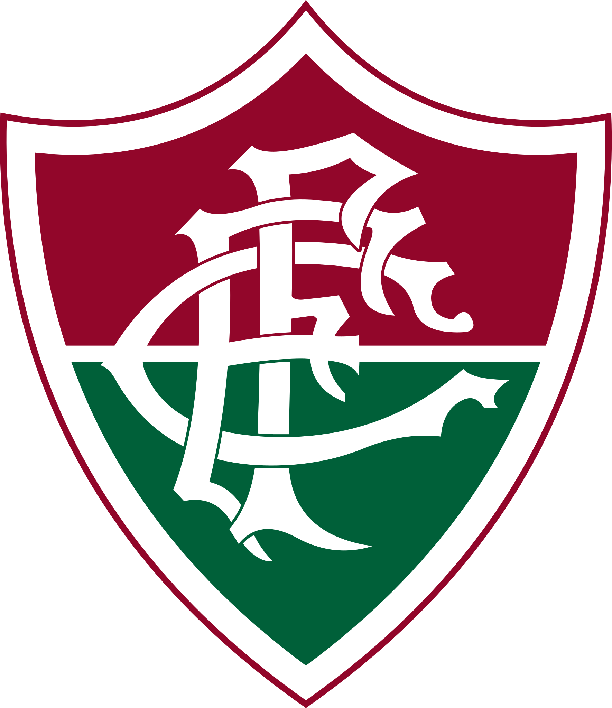
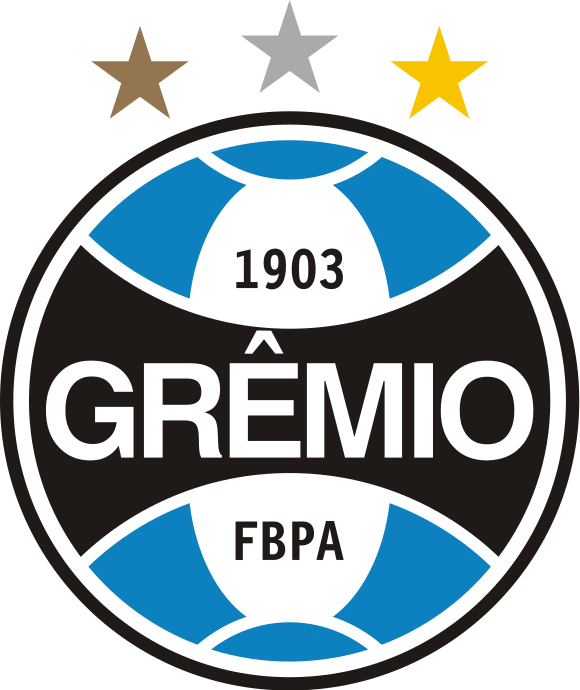
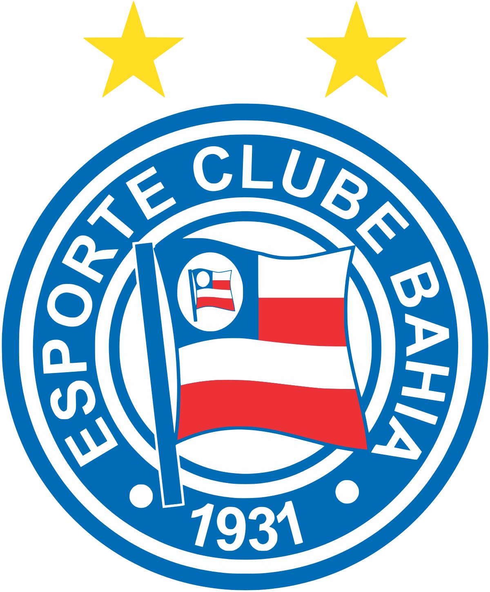
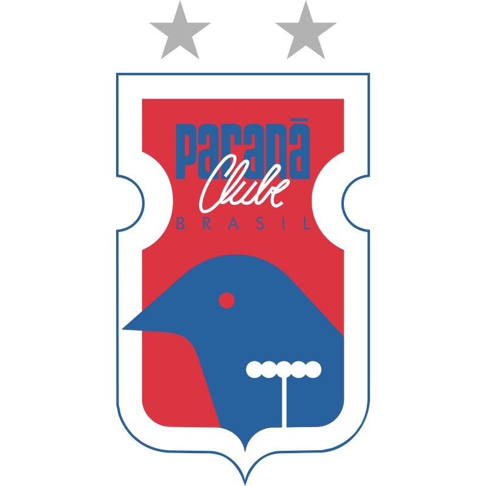
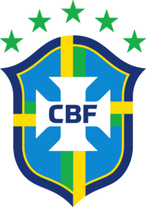

Descubra o Poder das Lendas do Futebol
Seja bem-vindo ao universo fascinante de oito times que transcenderam o esporte, conquistando corações e elevando a paixão pelo futebol a um patamar superior. Aqui, não apenas contamos histórias; celebramos legados, mergulhamos em conquistas e exploramos os produtos que encapsulam a essência destes clubes lendários.
Missão:
Nosso propósito é ser a plataforma definitiva para os fãs que buscam mais do que estatísticas frias e resultados de partidas. Queremos ser a fonte de inspiração que conecta você à rica tapeçaria cultural, emocional e histórica que define esses times de futebol. Ao compartilhar suas narrativas, aspiramos não apenas a informar, mas também a alimentar a paixão que nos une - o amor pelo jogo.
O que Nos Impulsiona:
Cada time que apresentamos possui uma identidade única, uma trajetória que moldou o curso da história do futebol. Somos motivados pelo desejo de destacar não apenas os momentos de glória, mas também os desafios superados, os heróis inesquecíveis e as tradições que transcendem as linhas do campo.
Explorando Títulos e Triunfos:
Junte-se a nós para desbravar os troféus erguidos, as batalhas vencidas e as histórias que formaram a espinha dorsal destes clubes. De campeonatos locais a conquistas internacionais, cada time é uma peça única no quebra-cabeça do futebol global, e estamos aqui para desvendar cada capítulo dessa jornada.
Além do Campo: Produtos Emblemáticos:
Vamos além dos gramados para explorar os produtos que se tornaram símbolos desses times. De jerseys icônicas a itens colecionáveis, nossa jornada abrange não apenas as realizações nos estádios, mas também os tesouros que os tornam parte integrante da cultura futebolística. Junte-se a nós nessa exploração emocionante, onde as narrativas se entrelaçam, os troféus brilham e a paixão pelo futebol se manifesta de maneiras inimagináveis. Este é mais do que um site; é um tributo à grandeza, à diversidade e à eternidade do esporte mais amado do mundo. Bem-vindo à nossa casa virtual - onde o futebol é mais do que um jogo, é uma história viva.
Times Parceiros:






